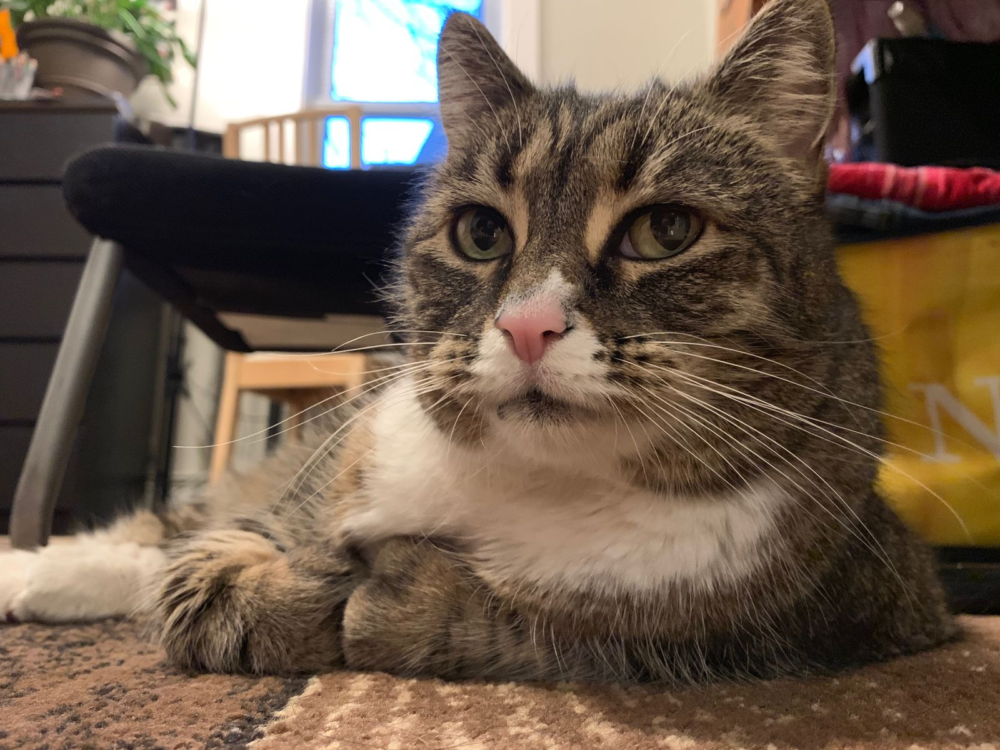
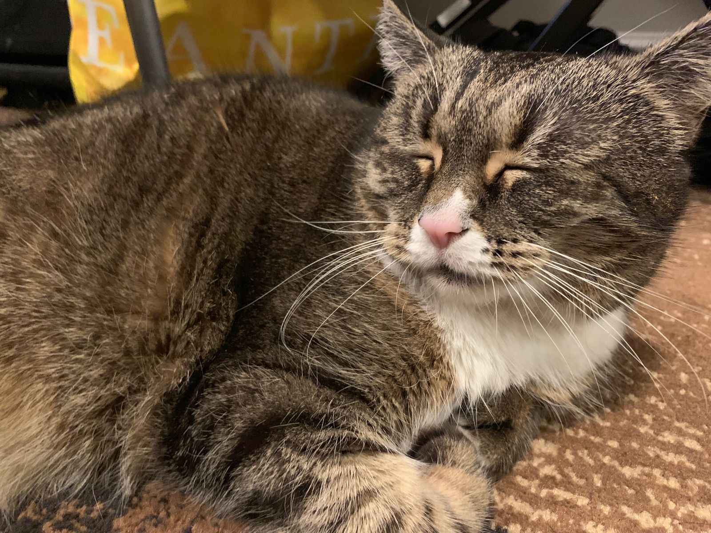

Aayla updates
It's been just a few days since I dropped off Aayla with my friends. Five and a half weeks will be the longest we've been apart since I was off at college. Thankfully, I get Aayla updates while I am on the road. She appears to be very happy.

